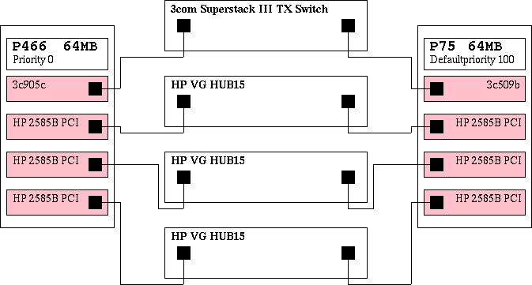

8. A Practical Setup Example
I had to solve a small hardware incompatibility. HP-VG (Voice Grade) 100Mbit network is not fast Ethernet compatible. Having neither the money nor the will to replace the stuff and having the need to expand the system I had to find a solution which was a) stable and b) cheap.
For sure buying a HP modular switch was not meeting condition b). So I remembered I heard about Linux-bridging which automatically fulfilled condition a) and b).
So quite some time ago I successfully set up a bridge between the two incompatible networks. Its first hardware-layout is shown in Figure 1.
It was configured as a transparent network component, meaning it didn't take a part in the network, but only bridged it. Originally it was set up on kernel 2.0.35 from a SuSE 5.3 distribution.
The next problem showed up at once. A single bridge connecting the big segments might be c) a bottleneck and d) a reason to kill the netadmin, if it blows up. So I tried to find some solution for that problem.
What happened next was that I discovered some hints that a new maintainer took over the bridging code. A few mails on the bridge-mailing list later as shown in Section 7.1 I was more clever. The new modular bridging code fulfilled exactly what I was looking for.
The new maintainer: Lennert Buytenhek . His project page can be found at http://www.math.leidenuniv.nl/~buytenh/bridge/ IMHO he's doing a great job. Thanks a lot.
8.1. Hardware-setup
The ideas and hints I got from the mailing list discussion shown in Section 7.1 lead to a new hardware-setup shown in Figure 2. The setup is intended to provide a default machine (guess which one). The bridge has 3 HP cards of which each is connected to a HP VG15 hub. The 3com card is connected to a 3com Superstack Fast Ethernet switch.
Figure 2. Hardware Setup Of The Multi bridge Scenario

The practically working setup of my local linux Ethernet multi bridge
This setup is not only fail proof to any one of the bridge's interfaces being down, but also to complete blackout of one of the bridges. Additional advantage to the old-setup Figure 1 that the single HUBS are switched. This means that a datagram being sent from one port on the VG15 HUB blocks 30 ports by maximum and 15 ports by minimum, instead of blocking all 45 ports. Also, the breakdown of the HUB, to the old bridge was connected, would have caused the whole HP-segment to break down. With the new code only the machines connected to the broken HUB will get no more data.
8.2. Software-setup
For both bridges the setup is exactly the same (with the exception of bridge priority which will be discussed later on). The machine was setup by the SuSE 6.4 distribution with the original unpatched kernel sources installed. At this point only the minimal configuration and no additional hardware or network setup.
The basic setup is according the descriptions in the beginning of this document. The thing I did in addition was bringing up the unpatched 2.2.14 sources of the SuSE 6.4 distribution to version 2.2.15 as in Example 11.
Example 11. Upgrading The Kernel From 2.2.14 To 2.2.15
root@mbb-1:~ # cd /usr/src/linux-2.2.14
root@mbb-1:/usr/src/linux-2.2.14 # patch -p1 \
/usr/local/download/kernel/patch-2.2.15
patching file ........................
patching file ...................
...
..
root@mbb-1:/usr/src/linux-2.2.14 # cd ..
root@mbb-1:/usr/src # mv linux-2.2.14 linux-2.2.15
root@mbb-1:/usr/src # rm linux
root@mbb-1:/usr/src # ln -s linux-2.2.15 linux
|
Next step was to apply the bridge-patch as shown in Example 12.
Example 12. Applying The Kernel Patch
root@mbb-1:/usr/src # cd /usr/src/linux-2.2.15
root@mbb-1:/usr/src/linux-2.2.15 # patch -p1 < \
bridge-0.0.5-against-2.2.15.diff
patching file ........................
patching file ...................
...
..
|
After that I selected the bridging code to be compiled as a module as shown in Example 13.
Example 13. Configuring The Kernel
root@mbb-1:/usr/src/linux-2.2.15 # make config
..
*
* Code maturity level options
*
Prompt for development and/or incomplete code/drivers (CONFIG_EXPERIMENTAL)
[N/y/?] Y
..
802.1d Ethernet Bridging (CONFIG_BRIDGE) [N/y/m/?] (NEW) m
..
|
By the way I also selected the drivers of my NIC's to be compiled as modules which resulted to 3c95x.o and hp100.o.
root@mbb-1:/usr/src/linux-2.2.15 # make dep clean zImage \
modules modules_install zlilo
..
root@mbb-1:/usr/src/linux-2.2.15 # init 6
|
After the reboot happening I started at runlevel 1 leaving all the networking out of the running system. That gave me the chance to check the setup step by step.
The command modprobe -v bridge worked without any warnings, so that one was OK. Next I edited my /etc/modules.conf by aliasing my network card drivers as shown in Example 14 and Example 15. I didn't need to make use of the options, all cards where realized proper as I checked by cat /proc/modules, cat /proc/interrupts and cat /proc/ioports.
Example 14. /etc/modules.conf of mbb-1
# Aliases - specify your hardware
alias eth0 3c59x
alias eth1 hp100
alias eth2 hp100
alias eth3 hp100
|
Example 15. /etc/modules.conf of mbb-2
# Aliases - specify your hardware
alias eth0 3c509
alias eth1 hp100
alias eth2 hp100
alias eth3 hp100
|
So next thing would have been a step by step setup of the bridge and it's interfaces. Because I'm lazy I just show the init script I prepared for the setup.
Important: Of course you'll have do adapt the script to your system, if you want to use it. Please remember I'm writing this for the setup of a SuSE distribution.
Example 16. Bridge Init Script
#! /bin/bash
# Copyright (c) 2000 Uwe Böhme. All rights reserved.
#
# Author: Uwe Böhme <uwe@bnhof.de>, 2000
#
#
# /sbin/init.d/bridge
#
. /etc/rc.config
return=$rc_done
case "$1" in
start)
echo "Starting service bridge mueb"
brctl addbr mueb || return=$rc_failed |

- This command creates a new virtual interface (bridge instance)
with the name mueb and also brings up the
bridge module.
Note: At least my system it does. Maybe you have to enable the kernel module loader.

- Here the script sets the bridge's priority (relative to other bridges in the net) to 0. This is indicating that this bridge will become the root bridge as long as there is no other bridge with a lower priority level available.


- Enslaves the Ethernet interface to become a port in the bridge.


- Takes away any possibly disturbing IP-address and brings the interface up.
- (11)
- Setting the hello time of the bridge to one second makes it possible to reduce the maxage value of the bridges inside the network.
- (12)
- Setting the time the a bridge is waiting before starting the takeover process to a shorter period.
- (13)
- Forcing the bridge to forward earlier than the default time.
- (14)(15)(16)(17)
- Take the Ethernet out of the bridging instance.
- (18)
- Destroy the bridge instance.
- (19)
- Remove the bridge module.
Important: In the init script of the backup bridge this line in missing, leaving it with the default priority of 100.
To polish your setup and to be able to reach the bridge from remote you now can configure your bridge instance as if it would be a physical existing network interface. You can give it a nice IP with a suitable net-mask. It doesn't matter from which segment in you net, you will reach the bridge with this IP-address.
8.3. See It Work
Here I want to show and explain about how the running bridge shows up. The output Example 17 of bridge@mbb-1 is the output of the primary bridge, while you see in Example 18 the output of the backup bridge waiting to take over.
Example 17. Status Output Of mbb-1 Fully Up
mueb
bridge id 0000.0800062815f6
designated root 0000.0800062815f6
root port 0 path cost 0
max age 4.00 bridge max age 4.00
hello time 1.00 bridge hello time 1.00
forward delay 4.00 bridge forward delay 4.00
ageing time 300.00 gc interval 4.00
hello timer 0.80 tcn timer 0.00
topology change timer 0.00 gc timer 3.80
flags
eth0 (1)
port id 8001 state forwarding
designated root 0000.0800062815f6 path cost 100
designated bridge 0000.0800062815f6 message age timer 0.00
designated port 8001 forward delay timer 0.00
designated cost 0 hold timer 0.80
flags
eth1 (2)
port id 8002 state forwarding
designated root 0000.0800062815f6 path cost 100
designated bridge 0000.0800062815f6 message age timer 0.00
designated port 8002 forward delay timer 0.00
designated cost 0 hold timer 0.80
flags
eth2 (3)
port id 8003 state forwarding
designated root 0000.0800062815f6 path cost 100
designated bridge 0000.0800062815f6 message age timer 0.00
designated port 8003 forward delay timer 0.00
designated cost 0 hold timer 0.80
flags
eth3 (4)
port id 8004 state forwarding
designated root 0000.0800062815f6 path cost 100
designated bridge 0000.0800062815f6 message age timer 0.00
designated port 8004 forward delay timer 0.00
designated cost 0 hold timer 0.80
flags
|
Example 18. Status Output Of mbb-2 Fully Up
mueb
bridge id 0064.00a024d04cd6
designated root 0000.0800062815f6
root port 1 path cost 100
max age 4.00 bridge max age 4.00
hello time 1.00 bridge hello time 1.00
forward delay 4.00 bridge forward delay 4.00
ageing time 300.00 gc interval 4.00
hello timer 0.00 tcn timer 0.00
topology change timer 0.00 gc timer 2.39
flags
eth0 (1)
port id 8001 state forwarding
designated root 0000.0800062815f6 path cost 100
designated bridge 0000.0800062815f6 message age timer 0.42
designated port 8001 forward delay timer 0.00
designated cost 0 hold timer 0.00
flags
eth1 (2)
port id 8002 state blocking
designated root 0000.0800062815f6 path cost 100
designated bridge 0000.0800062815f6 message age timer 0.42
designated port 8002 forward delay timer 0.00
designated cost 0 hold timer 0.00
flags
eth2 (3)
port id 8003 state blocking
designated root 0000.0800062815f6 path cost 100
designated bridge 0000.0800062815f6 message age timer 0.42
designated port 8003 forward delay timer 0.00
designated cost 0 hold timer 0.00
flags
eth3 (4)
port id 8004 state blocking
designated root 0000.0800062815f6 path cost 100
designated bridge 0000.0800062815f6 message age timer 0.42
designated port 8004 forward delay timer 0.00
designated cost 0 hold timer 0.00
flags
|
If you take a glance into /var/log/messages as shown in Example 19 and in Example 20 you can see how the bridges are coming up and deciding how to do their duty. mbb-1 has a lower value for bridge-priority (see ), telling it to try to become the root bridge. As you can see mbb-1 forwards all ports, while mbb-2 blocks all ports with the exception of eth0.
Example 19. mbb-1 Messages From init 2
May 25 16:46:04 mbb-1 init: Switching to runlevel: 2
May 25 16:46:04 mbb-1 kernel: NET4: Ethernet Bridge 008 for NET4.0
May 25 16:46:04 mbb-1 kernel: device eth0 entered promiscuous mode
May 25 16:46:04 mbb-1 kernel: device eth1 entered promiscuous mode
May 25 16:46:04 mbb-1 kernel: device eth2 entered promiscuous mode
May 25 16:46:04 mbb-1 kernel: device eth3 entered promiscuous mode
May 25 16:46:04 mbb-1 kernel: mueb: port 4(eth3) entering listening state
May 25 16:46:04 mbb-1 kernel: mueb: port 3(eth2) entering listening state
May 25 16:46:04 mbb-1 kernel: mueb: port 2(eth1) entering listening state
May 25 16:46:04 mbb-1 kernel: mueb: port 1(eth0) entering listening state
May 25 16:46:08 mbb-1 kernel: mueb: port 4(eth3) entering learning state
May 25 16:46:08 mbb-1 kernel: mueb: port 3(eth2) entering learning state
May 25 16:46:08 mbb-1 kernel: mueb: port 2(eth1) entering learning state
May 25 16:46:08 mbb-1 kernel: mueb: port 1(eth0) entering learning state
May 25 16:46:12 mbb-1 kernel: mueb: port 4(eth3) entering forwarding state
May 25 16:46:12 mbb-1 kernel: mueb: topology change detected, propagating
May 25 16:46:12 mbb-1 kernel: mueb: port 3(eth2) entering forwarding state
May 25 16:46:12 mbb-1 kernel: mueb: topology change detected, propagating
May 25 16:46:12 mbb-1 kernel: mueb: port 2(eth1) entering forwarding state
May 25 16:46:12 mbb-1 kernel: mueb: topology change detected, propagating
May 25 16:46:12 mbb-1 kernel: mueb: port 1(eth0) entering forwarding state
May 25 16:46:12 mbb-1 kernel: mueb: topology change detected, propagating
|
Example 20. mbb-2 Messages From init 2
Jun 8 06:06:16 mbb-2 init: Switching to runlevel: 2
Jun 8 06:06:17 mbb-2 kernel: NET4: Ethernet Bridge 008 for NET4.0
Jun 8 06:06:17 mbb-2 kernel: device eth0 entered promiscuous mode
Jun 8 06:06:17 mbb-2 kernel: device eth1 entered promiscuous mode
Jun 8 06:06:17 mbb-2 kernel: device eth2 entered promiscuous mode
Jun 8 06:06:17 mbb-2 kernel: device eth3 entered promiscuous mode
Jun 8 06:06:17 mbb-2 kernel: mueb: port 4(eth3) entering listening state
Jun 8 06:06:17 mbb-2 kernel: mueb: port 3(eth2) entering listening state
Jun 8 06:06:17 mbb-2 kernel: mueb: port 2(eth1) entering listening state
Jun 8 06:06:17 mbb-2 kernel: mueb: port 1(eth0) entering listening state
Jun 8 06:06:17 mbb-2 kernel: mueb: port 2(eth1) entering blocking state
Jun 8 06:06:17 mbb-2 kernel: mueb: port 3(eth2) entering blocking state
Jun 8 06:06:17 mbb-2 kernel: mueb: port 4(eth3) entering blocking state
Jun 8 06:06:21 mbb-2 kernel: mueb: port 1(eth0) entering learning state
Jun 8 06:06:25 mbb-2 kernel: mueb: port 1(eth0) entering forwarding state
|
8.4. Bridge Tests
To check if really all the promised features are working, I did some crude test. The message logs are shown here in.
8.4.1. Tear The Patch Wire Test
I think just taking a patch wire out of a bridge port is a really good real survival test. So I pulled the plugs one by one out of the sockets and looked what happened. To give you not too much tension let me summarize first: It's really working. All the takeovers happened within less then 12 seconds.
The really interesting messages you can find at mbb-2. To see how everything comes up, I stopped network services first. In Example 21 you will see the messages caused by a init 2 followed by a "take out the plug, wait what happens, then place it back" in the order eth3, eth2, eth1, eth0 .
Note: The thing I did, was making the tests, and publishing the dump. The one writing the nice explanations was Lennert again.
Example 21. mbb-2 Message Output Of Bridge Test
Jun 8 06:06:16 mbb-2 init: Switching to runlevel: 2 Jun 8 06:06:17 mbb-2 kernel: NET4: Ethernet Bridge 008 for NET4.0 Jun 8 06:06:17 mbb-2 kernel: device eth0 entered promiscuous mode Jun 8 06:06:17 mbb-2 kernel: device eth1 entered promiscuous mode Jun 8 06:06:17 mbb-2 kernel: device eth2 entered promiscuous mode Jun 8 06:06:17 mbb-2 kernel: device eth3 entered promiscuous mode Jun 8 06:06:17 mbb-2 kernel: mueb: port 4(eth3) entering listening state Jun 8 06:06:17 mbb-2 kernel: mueb: port 3(eth2) entering listening state Jun 8 06:06:17 mbb-2 kernel: mueb: port 2(eth1) entering listening state Jun 8 06:06:17 mbb-2 kernel: mueb: port 1(eth0) entering listening state |
- The kernel sees that there are already bridges (actually, only one of them, but Hello packets are coming in on all 4 of the ports) on eth[0123].
- To maintain connectivity with the rest of the network, the bridge decides to keep port 1 (eth0) active (i.e. in the "forwarding" state), and to temporarily disable ports 2-4.
- The plug on eth3 was pulled. Here you can see that the message age timer expired ((13)). The last Hello packet was seen more than X seconds ago. The bridge concludes that the connection to the bridge that was there has died. Therefore, it is going to try to enable this port, to provide network connectivity to the now-cutoff segment.
- It enters the listening state. It waits to see whether the old bridge might come back, or whether another bridge is going to claim takeover.
- Okay, no other bridge was seen. We're going to try to provide network connectivity to this segment ourselves. Which means: we're going to try and become "designated bridge" for this segment. We now enter the learning state. In this state, we only learn MAC addresses and we do not forward yet. This is because if we see an unknown destination address, we send the datagram to all ports, and this "flooding" will happen unnecessarily often if we have a empty MAC table. Therefore, we're going to fill up our MAC table with useful entries first, and this is what happens during the learning state.
- Okay, here we go. Pray for us.
- Because we took over for this segment, all communication towards this segment now goes through this bridge. This means that the topology has changed. If the topology changes, we must let all bridges now, so that they can time out stale MAC address location data quickly. This is why we send Topology Change Notification Bridge Protocol Data Units (tcn bpdus).
Apparently the root bridge immediately acknowledges this tcn bpdu in the next Hello message it sends (the protocol requires for the root bridge to acknowledge it), because this is the only such message we see.
Note: In situations where you see loads of these messages, it means that the root bridge cannot acknowledge them, which probably means your root bridge has a twisted STP implementation.
- Hey, something happened again!
- Yup... eth3 came back online. The root bridge will provide connectivity for this segment again, so that we can disable this port.
- (12)(13)
- Same story for eth2, eth1 and eth0.
- (11)
- This means the tcn bpdu wasn't acknowledged quick enough. That is why it is retransmitted.
The root bridge mbb-1 was not so chatty. It only reported some topology changes and propagated them as you can see in Example 22. If somebody can offer a explanation why the root bridge is so quiet in messaging please tell me.
Example 22. mbb-2 Message Output Of Bridge Test
Jun 8 06:06:52 mbb-1 kernel: mueb: received tcn bpdu on port 1(eth0)
Jun 8 06:06:52 mbb-1 kernel: mueb: topology change detected, propagating
Jun 8 06:07:31 mbb-1 kernel: mueb: received tcn bpdu on port 1(eth0)
Jun 8 06:07:31 mbb-1 kernel: mueb: topology change detected, propagating
Jun 8 06:07:32 mbb-1 kernel: mueb: received tcn bpdu on port 1(eth0)
Jun 8 06:07:32 mbb-1 kernel: mueb: topology change detected, propagating
Jun 8 06:08:11 mbb-1 kernel: mueb: received tcn bpdu on port 1(eth0)
Jun 8 06:08:11 mbb-1 kernel: mueb: topology change detected, propagating
Jun 8 06:08:29 mbb-1 kernel: mueb: received tcn bpdu on port 1(eth0)
Jun 8 06:08:29 mbb-1 kernel: mueb: topology change detected, propagating
Jun 8 06:09:03 mbb-1 kernel: mueb: received tcn bpdu on port 2(eth1)
Jun 8 06:09:03 mbb-1 kernel: mueb: topology change detected, propagating
Jun 8 06:11:40 mbb-1 kernel: mueb: received tcn bpdu on port 1(eth0)
Jun 8 06:11:40 mbb-1 kernel: mueb: topology change detected, propagating
Jun 8 06:11:41 mbb-1 kernel: mueb: received tcn bpdu on port 1(eth0)
Jun 8 06:11:41 mbb-1 kernel: mueb: topology change detected, propagating
|
One of the other bridges tells us that the topology of the LAN has changed (see Example 21). Well, okay. We will set lower timeouts on our MACC table for a short period of time, and we will propagate this topology change throughout the network.
8.4.2. Kill The Root Bridge Test
The ultimate test is of course a total blocking, breakdown or something similar to the root bridge. I did this by shooting down the root bridge by init 1. Next I brought it up again with init 2. Last I pulled all plugs out of the root bridge and waited for some time before I placed them again. In Example 23 you will see the messages from the master-bridge mbb-1, and in Example 24 you see what happened the same time at the backup-bridge mbb-2.
Example 23. Test Messages Of Master Bridge mbb-1
Jun 12 13:35:15 mbb-1 init: Switching to runlevel: 1
Jun 12 13:35:20 mbb-1 kernel: mueb: port 4(eth3) entering disabled state
Jun 12 13:35:20 mbb-1 kernel: mueb: port 3(eth2) entering disabled state
Jun 12 13:35:20 mbb-1 kernel: mueb: port 2(eth1) entering disabled state
Jun 12 13:35:20 mbb-1 kernel: mueb: port 1(eth0) entering disabled state
Jun 12 13:35:20 mbb-1 kernel: mueb: port 2(eth1) entering disabled state
Jun 12 13:35:20 mbb-1 kernel: device eth1 left promiscuous mode
Jun 12 13:35:20 mbb-1 kernel: mueb: port 1(eth0) entering disabled state
Jun 12 13:35:20 mbb-1 kernel: device eth0 left promiscuous mode
Jun 12 13:35:20 mbb-1 kernel: mueb: port 4(eth3) entering disabled state
Jun 12 13:35:20 mbb-1 kernel: device eth3 left promiscuous mode
Jun 12 13:35:20 mbb-1 kernel: mueb: port 3(eth2) entering disabled state
Jun 12 13:35:20 mbb-1 kernel: device eth2 left promiscuous mode
Jun 12 13:35:50 mbb-1 init: Switching to runlevel: 2
Jun 12 13:35:50 mbb-1 kernel: NET4: Ethernet Bridge 008 for NET4.0
Jun 12 13:35:51 mbb-1 kernel: device eth0 entered promiscuous mode
Jun 12 13:35:51 mbb-1 kernel: device eth1 entered promiscuous mode
Jun 12 13:35:51 mbb-1 kernel: device eth2 entered promiscuous mode
Jun 12 13:35:51 mbb-1 kernel: device eth3 entered promiscuous mode
Jun 12 13:35:51 mbb-1 kernel: mueb: port 4(eth3) entering listening state
Jun 12 13:35:51 mbb-1 kernel: mueb: port 3(eth2) entering listening state
Jun 12 13:35:51 mbb-1 kernel: mueb: port 2(eth1) entering listening state
Jun 12 13:35:51 mbb-1 kernel: mueb: port 1(eth0) entering listening state
Jun 12 13:35:51 mbb-1 kernel: mueb: received tcn bpdu on port 2(eth1)
Jun 12 13:35:51 mbb-1 kernel: mueb: topology change detected, propagating
Jun 12 13:35:52 mbb-1 kernel: mueb: received tcn bpdu on port 1(eth0)
Jun 12 13:35:52 mbb-1 kernel: mueb: topology change detected, propagating
Jun 12 13:35:55 mbb-1 kernel: mueb: port 4(eth3) entering learning state
Jun 12 13:35:55 mbb-1 kernel: mueb: port 3(eth2) entering learning state
Jun 12 13:35:55 mbb-1 kernel: mueb: port 2(eth1) entering learning state
Jun 12 13:35:55 mbb-1 kernel: mueb: port 1(eth0) entering learning state
Jun 12 13:35:59 mbb-1 kernel: mueb: port 4(eth3) entering forwarding state
Jun 12 13:35:59 mbb-1 kernel: mueb: topology change detected, propagating
Jun 12 13:35:59 mbb-1 kernel: mueb: port 3(eth2) entering forwarding state
Jun 12 13:35:59 mbb-1 kernel: mueb: topology change detected, propagating
Jun 12 13:35:59 mbb-1 kernel: mueb: port 2(eth1) entering forwarding state
Jun 12 13:35:59 mbb-1 kernel: mueb: topology change detected, propagating
Jun 12 13:35:59 mbb-1 kernel: mueb: port 1(eth0) entering forwarding state
Jun 12 13:35:59 mbb-1 kernel: mueb: topology change detected, propagating
Jun 12 13:39:03 mbb-1 kernel: mueb: received tcn bpdu on port 1(eth0)
Jun 12 13:39:03 mbb-1 kernel: mueb: topology change detected, propagating
Jun 12 13:39:05 mbb-1 kernel: mueb: received tcn bpdu on port 1(eth0)
Jun 12 13:39:05 mbb-1 kernel: mueb: topology change detected, propagating
|
Example 24. Test Messages Of Backup Bridge mbb-2
Jun 12 13:35:21 mbb-2 kernel: mueb: neighbour 0000.08:00:06:28:15:f6 lost on port 4(eth3)
Jun 12 13:35:21 mbb-2 kernel: mueb: port 4(eth3) entering listening state
Jun 12 13:35:21 mbb-2 kernel: mueb: neighbour 0000.08:00:06:28:15:f6 lost on port 3(eth2)
Jun 12 13:35:21 mbb-2 kernel: mueb: port 3(eth2) entering listening state
Jun 12 13:35:21 mbb-2 kernel: mueb: neighbour 0000.08:00:06:28:15:f6 lost on port 2(eth1)
Jun 12 13:35:21 mbb-2 kernel: mueb: port 2(eth1) entering listening state
Jun 12 13:35:21 mbb-2 kernel: mueb: neighbour 0000.08:00:06:28:15:f6 lost on port 1(eth0)
Jun 12 13:35:21 mbb-2 kernel: mueb: topology change detected, propagating
Jun 12 13:35:25 mbb-2 kernel: mueb: port 4(eth3) entering learning state
Jun 12 13:35:25 mbb-2 kernel: mueb: port 3(eth2) entering learning state
Jun 12 13:35:25 mbb-2 kernel: mueb: port 2(eth1) entering learning state
Jun 12 13:35:29 mbb-2 kernel: mueb: port 4(eth3) entering forwarding state
Jun 12 13:35:29 mbb-2 kernel: mueb: topology change detected, propagating
Jun 12 13:35:29 mbb-2 kernel: mueb: port 3(eth2) entering forwarding state
Jun 12 13:35:29 mbb-2 kernel: mueb: topology change detected, propagating
Jun 12 13:35:29 mbb-2 kernel: mueb: port 2(eth1) entering forwarding state
Jun 12 13:35:29 mbb-2 kernel: mueb: topology change detected, propagating
Jun 12 13:35:49 mbb-2 kernel: mueb: topology change detected, sending tcn bpdu
Jun 12 13:35:49 mbb-2 kernel: mueb: port 3(eth2) entering blocking state
Jun 12 13:35:49 mbb-2 kernel: mueb: topology change detected, \
<6>mueb: port 4(eth3) entering blocking state
Jun 12 13:35:49 mbb-2 kernel: mueb: topology change detected, \
<6>mueb: port 2(eth1) entering blocking state
Jun 12 13:35:50 mbb-2 kernel: mueb: retransmitting tcn bpdu
Jun 12 13:38:26 mbb-2 kernel: mueb: neighbour 0000.08:00:06:28:15:f6 lost on port 2(eth1)
Jun 12 13:38:26 mbb-2 kernel: mueb: port 2(eth1) entering listening state
Jun 12 13:38:27 mbb-2 kernel: mueb: neighbour 0000.08:00:06:28:15:f6 lost on port 3(eth2)
Jun 12 13:38:27 mbb-2 kernel: mueb: port 3(eth2) entering listening state
Jun 12 13:38:28 mbb-2 kernel: mueb: neighbour 0000.08:00:06:28:15:f6 lost on port 4(eth3)
Jun 12 13:38:28 mbb-2 kernel: mueb: port 4(eth3) entering listening state
Jun 12 13:38:30 mbb-2 kernel: mueb: port 2(eth1) entering learning state
Jun 12 13:38:30 mbb-2 kernel: mueb: neighbour 0000.08:00:06:28:15:f6 lost on port 1(eth0)
Jun 12 13:38:30 mbb-2 kernel: mueb: topology change detected, propagating
Jun 12 13:38:31 mbb-2 kernel: mueb: port 3(eth2) entering learning state
Jun 12 13:38:32 mbb-2 kernel: mueb: port 4(eth3) entering learning state
Jun 12 13:38:34 mbb-2 kernel: mueb: port 2(eth1) entering forwarding state
Jun 12 13:38:34 mbb-2 kernel: mueb: topology change detected, propagating
Jun 12 13:38:35 mbb-2 kernel: mueb: port 3(eth2) entering forwarding state
Jun 12 13:38:35 mbb-2 kernel: mueb: topology change detected, propagating
Jun 12 13:38:36 mbb-2 kernel: mueb: port 4(eth3) entering forwarding state
Jun 12 13:38:36 mbb-2 kernel: mueb: topology change detected, propagating
Jun 12 13:39:01 mbb-2 kernel: mueb: topology change detected, sending tcn bpdu
Jun 12 13:39:01 mbb-2 kernel: mueb: port 3(eth2) entering blocking state
Jun 12 13:39:01 mbb-2 kernel: mueb: topology change detected, \
<6>mueb: port 4(eth3) entering blocking state
Jun 12 13:39:02 mbb-2 kernel: mueb: topology change detected, sending tcn bpdu
Jun 12 13:39:02 mbb-2 kernel: mueb: port 2(eth1) entering blocking state
|